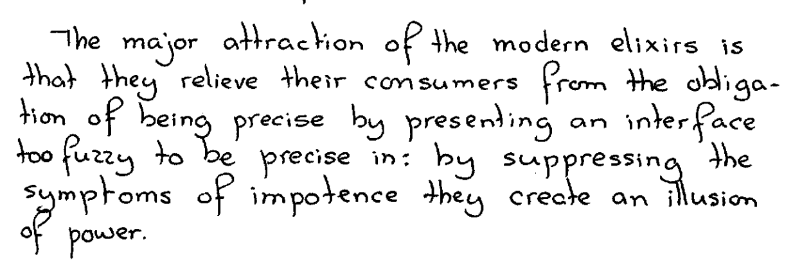

Things to Read
Computation and Human Experience, Phil Agre
- Read the first few chapters of this book. Seems to be an exciting synthesis (Agre characterizes his work as such too) between Dreyfus-style critiques of AI and an honest attempt at a new foundations of AI research. This was published in the 90s, before anyone had heard of “deep learning.” I wonder if the synthesis needs some revising.
Some Things I’ve Read
The Alignment Problem, Brian Christian
- It’s not really about the alignment problem!
In AI ethics, “bad” isn’t good enough, Amanda Askell
- Makes a distinction between pro tanto and “all things considered” arguments. Just because an AI system does something harmful does not mean we shouldn’t build it. Askell doesn’t fill in the positive reasons that would overweigh the harms, but her main point here is to resist this argumentative move that she thinks is common in AI ethics. She’s right that it is common, but I don’t think it’s because of hastiness on the part of AI ethics researchers; rather, they just don’t think there’s a lot of benefit to AI systems at all. In the absence of overriding considerations, pro tanto arguments do become “all things considered” arguments.
- Dijkstra talks about what he sees as the threats to computer science. He makes an interesting analogy between the alchemists’ search for the Philosopher’s Stone that turns things into gold and the Elixir of Life that confers immortality to certain fads in computing. The search for the Stone is akin to the search for ever more complicated features in programming languages (e.g. Ada); the search for the Elixir is akin to tools that would do away with programming altogether, where instead the user would just type commands in natural language that the computer would interpret. ChatGPT, of course, is just the latest and best incarnation of such an Elixir, which is why it’s a delight to find this rather prescient passage here:

The Bitter Lesson, Richard Sutton
- Richard Sutton’s “bitter lesson” here is that adding “knowledge” (e.g. baking in features, heuristics, etc) into AI systems does not redound into better performance, and the real thing that drives progress is generic methods that ride on hardware improvements to leverage greater compute power, like learning (generalize from bigger and bigger datasets) and search (explore bigger and bigger search spaces). Is this right, or is deep learning going to hit a wall and require something like neurosymbolic approaches in the future? It’s not clear at all.
“The Steep Cost of Capture”, Meredith Whittaker
- Because deep learning requires enormous amounts of compute power and training data, academics cannot compete with big tech companies to do research. This capture of AI by big tech companies has strong parallels with the US military’s capture of general scientific research during the Cold War, where the military dictated the direction of scientific research and suppressed scientists who expressed dissent about proposed projects (e.g. the Strategic Defense Initiative). Likewise, big tech companies suppress dissent against deep learning (the Stochastic Parrots affair) as well as provide support to what Whittaker sees as controlled opposition (algorithmic fairness).
Acquired podcast, “NVIDIA: The Dawn of the AI Era”
- How NVIDIA cornered the high-end ML training market. At least part of the answer: because they bothered to write a good software ecosystem for their hardware.
The Public Philosopher podcast, “Will AI Make Thinking Obsolete?”
- Fun thought experiments with some LSE students. There’s at least one guy who saw a Black Mirror episode and thought it was cool and not scary, actually.